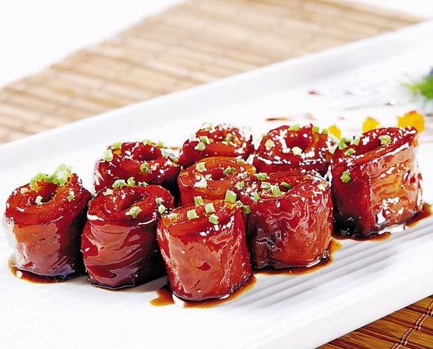

九转大肠

介绍
九转大肠（Braised intestines in brown sauce），是中国山东省济南市的传统名菜，属于山东菜系。
九转大肠是以猪大肠为主料，加以葱、姜、芫荽等配料，通过煮、烧等烹饪技法制作而成，成菜后有辣觉，并且酸、甜、香、咸四味俱全，色泽红润，质地软嫩。
食材原料
- 白色猪大肠 750 克
- 葱 5 克
- 姜 1 克
- 芫荽 5 克
- 清汤 150 克
- 花椒油 15 克
- 白油 20 克
- 盐 2 克
- 酱油 15 克
- 米醋 50 克
- 料酒 10 克
- 白糖 100 克
- 胡椒面 0.5 克
- 砂仁面 0.5 克
- 肉桂面 0.5 克
制作步骤
- 将猪大肠顶刀切成 4 厘米长的段。
- 葱、姜、芫荽切成末。
- 将切好后的猪大肠在沸水中煮透捞出，沥净水分。
- 炒勺放在小火上，加白油、白糖炒至鸡血红色时，放入大肠。
- 炒至上色后拨至勺边，加入葱、姜末炸出香味，烹醋，加入酱油、白糖、清汤、盐、料酒，搅拌均匀，用小火煨制。
- 汤汁浓稠将尽时放入白胡椒面、肉桂面、砂仁面、花椒油，颠翻均匀，撒上芫荽末。